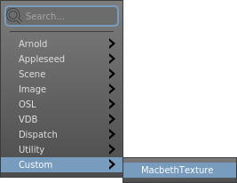
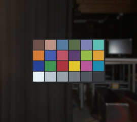

Tutorial: Startup Config 3; Custom Node Menu Entries¶
In this final part of the multi-part startup config tutorial, we will demonstrate a startup config that adds a custom entry to the node menu.

For your convenience, we’ve shipped Gaffer with a “MacbethTexture” reference graph. Using OSL, this reference procedurally generates a texture of a Macbeth chart on-the-fly, which should come in handy in lookdev and lighting graphs. Our custom node menu entry will insert a Reference node, and then load this reference graph.
From a user’s perspective, the node’s custom icon, colour, name, and its presence in the node menu will make it appear and behave like it came from a compiled module. Since it is merely a disguised Reference node, no additional code development or compilation was actually needed to build it. Its only requirement is that the end user or system has the reference graph on disk (already fulfilled, since we will use a reference that shipped with Gaffer). In a studio context, a node menu entry like this would require the reference file to be distributed on the file system, or otherwise shared in some way.
We hope that you can use this config as a springboard for adding other custom entries to the node menu. With this solution’s simplicity, TDs and artists alike can publish new nodes and add them to the menu.
customNodes.py¶
As with the other startup configs in this tutorial, this one will run in the GUI app. Copy this code to a new customNodes.py file in ~/gaffer/startup/gui:
1 2 3 4 5 6 7 8 9 10 11 12 13 14 15 16 17 18 19 20 21 | import Gaffer
import GafferUI
import os
def __macbethTexture() :
return Gaffer.Reference( "MacbethTexture" )
def __macbethTexturePostCreator( node, menu ) :
node.load(
os.path.expandvars( "$GAFFER_ROOT/resources/examples/references/macbethTexture.grf" )
)
nodeMenu = GafferUI.NodeMenu.acquire( application )
nodeMenu.append(
path = "/Custom/MacbethTexture",
nodeCreator = __macbethTexture,
postCreator = __macbethTexturePostCreator,
searchText = "MacbethTexture"
)
|
There are three parts to this simple config: a function for adding a node, a function for modifying the node after it’s created, and the call that adds these functions to the node menu. Let’s take a quick look at each.
The node creation function¶
After importing the necessary modules, the first and simplest step is to declare the menu function. When the user selects the custom entry from the node menu, this is the function that the menu calls. All this function must do is return a node type. It has no relevant arguments for us here.
5 6 7 | def __macbethTexture() :
return Gaffer.Reference( "MacbethTexture" )
|
There is one small detail we should note. On load, references can modify their containing Reference node’s UI metadata, but not the node’s name. We therefore have to set the node’s name ourselves (line 8, MacbethTexture). Otherwise, the node would appear in the graph with the generic name Reference. The same must be done when renaming any standard node.
The node post-creation function¶
Next, onto the post-creation function, which modifies the recently-created node. It requires two implicit keyword arguments, node and menu. The first simply refers to the node. The second refers to the node menu, which we will cover in the next section. For this entry, all we need to do is load a reference script into our new Reference node:
9 10 11 12 13 | def __macbethTexturePostCreator( node, menu ) :
node.load(
os.path.expandvars( "$GAFFER_ROOT/resources/examples/references/macbethTexture.grf" )
)
|
Tip
You may have noticed that on line 12 we use os.path.expandvars to expand $GAFFER_ROOT. If you kept the startup config from Part 1 of this tutorial, you can instead use:
11 12 | resourcesPath = script["variables"]["projectResources"]["value"].getValue()
node.load( resourcesPath + "/examples/references/macbethTexture.grf" )
|
With this approach, you can integrate contextual paths from your pipeline directly into the config.
In this particular example of a node menu function, we don’t modify any of the node’s plugs, but we could – such as automatically setting its Mode plug to 1. Any such additional node customization would go into the function, here.
Adding the functions to the node menu¶
To finish the config, we add both functions to the node menu. This part is as simple as grabbing calling append() on the node menu itself:
15 16 17 18 19 20 21 | nodeMenu = GafferUI.NodeMenu.acquire( application )
nodeMenu.append(
path = "/Custom/MacbethTexture",
nodeCreator = __macbethTexture,
postCreator = __macbethTexturePostCreator,
searchText = "MacbethTexture"
)
|
Line 14 merely grabs the node menu object from the application variable. Recall that we did the same in the custom bookmarks startup config.
The append() convenience method is quite useful, as it wraps several other behind-the-scenes utility functions and makes the node’s creation undoable. We pass four arguments to it:
path: The path to the node within the node menu’s hierarchy. Each position in the hierarchy is separated by a forward slash. If a parent position doesn’t exist yet, it will be created automatically.nodeCreator: The node creation function. We don’t pass any arguments to it.postCreator: The node post-creation function. We don’t pass any arguments to this one, either, but both the node and the menu itself are implicitly passed to it; recall thenodeandmenukeyword arguments we mentioned earlier.searchText: The menu entry’s keyword search text. This is typically the same as the node name. Capitalization is ignored.
That’s all! You can add more customized nodes to this config with similar ease, as long as each is managed by its own separate function and registered to the node menu with an append() call.
Testing the node menu entry¶
Let’s try testing the custom node. If you haven’t already, save the startup config, then launch a new instance of Gaffer. In the Graph Editor, the new entry should appear in the node menu under Custom > MacbethTexture, and will create a MacbethTexture node when selected.
Example graphs¶
Macbeth chart¶

This can be loaded in Gaffer from Help > Examples > Rendering > Macbeth Chart.
A scene with a simulated Macbeth chart using the custom node in this tutorial.
Recap¶
Each of the three startup configs in this tutorial series provided relatively simple examples, but we hope to have demonstrated that with just a bit of Python and a few files, you can easily customize the startup of the Gaffer’s apps to suit your worklflow and pipeline needs.